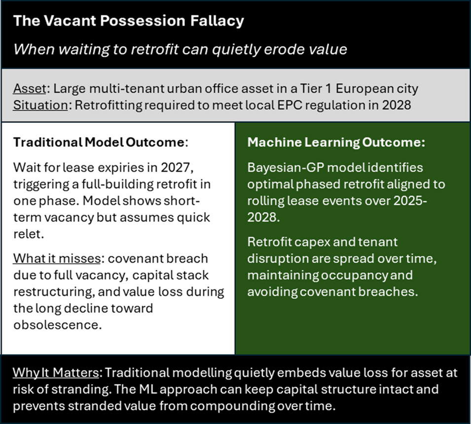
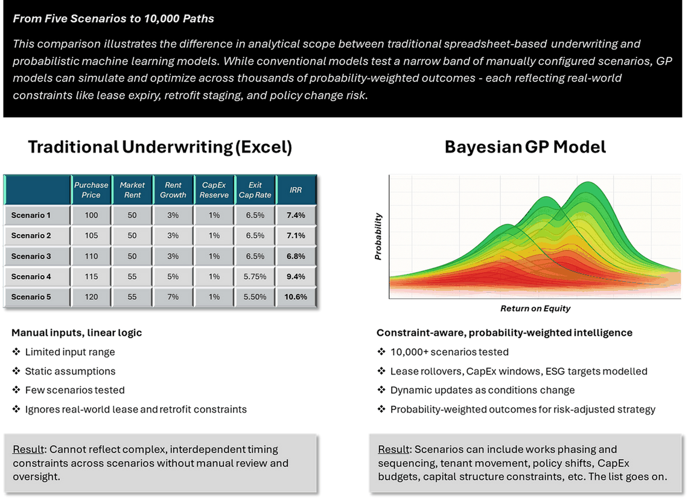
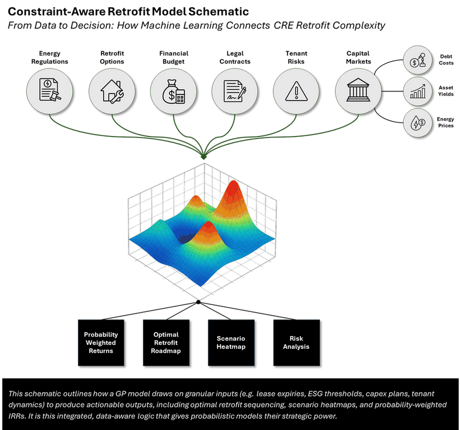

Strategic Insight: Rethinking Underwriting — How Machine Learning is Reshaping CRE Modelling
A New Kind of Risk Requires a New Kind of Model
An office tower in a prime European capital may appear fully stabilized until it's seen through the lens of a retrofit schedule, tenant lease rollovers, and impending ESG regulations. Suddenly, its risk profile shifts. With asset stranding looming on the horizon, retrofit feasibility becomes as material as cashflow stability.
This is the underwriting dilemma now facing the commercial real estate (CRE) sector. Environmental regulations are tightening. Occupiers and capital providers are demanding credible pathways to net-zero. And retrofitting assets is no longer optional. Yet traditional underwriting models aren’t well equipped to deal with the compounding uncertainties this new landscape brings.
The response from finance has been clear in other sectors. When static models fail to account for uncertainty, probabilistic and machine learning approaches take their place. In CRE, that transition has now begun.
Why Traditional Models Are No Longer Enough
Legacy underwriting frameworks still dominate much of the CRE investment process. Even in sophisticated acquisitions, underwritten often relies on Excel-based models that adjust a handful of assumptions - market rent, rent growth, exit yield, capex reserve, etc. Analysts build out 5 to 10 scenarios at most.
But that level of abstraction simply can't reflect the real complexity of retrofitting an occupied commercial asset. For example:
- Lease expiries across multiple tenants may not align with the retrofit timeline
- Regulatory thresholds may be met under some phasing options, but not others
- Capex budgets may be constrained by financing covenants or green bond terms
- Operational works may need to be staged to avoid tenant disruption
- ESG frameworks may shift during implementation, changing risk-weighting
Each of these constraints changes the retrofit outcome. In traditional models, each new constraint requires manual rebuilding or side calculations. The process becomes slow, brittle, and reactive.
Why Probabilistic Modelling Is a Step Change
Bayesian modelling offers a fundamentally different approach. Instead of producing a single-point forecast, it models a range of possible outcomes, weighted by probability, and continuously updated as new data becomes available.
This is not an exotic technique. It has been used for decades in fields ranging from climate science to quantitative finance. It is designed for environments where uncertainty is not a limitation, but a condition of the system.
When applied to CRE, Bayesian methods allow decision-makers to incorporate the uncertainties that define retrofit projects - regulatory timelines, energy cost forecasts, lease renewal patterns, and evolving investor expectations. The model improves as it learns, helping investors navigate shifting terrain with more confidence and less guesswork.
Gaussian Processes and the Power of Scale

Gaussian Processes (GPs) take this a step further. These machine learning models, rooted in Bayesian principles, do not just simulate outcomes, they learn from patterns in data, map interdependencies between variables, and generate continuous forecasts with confidence intervals.
Crucially, GPs support large scale scenario testing that traditional underwriting can't match.
While a human analyst might manually build a handful of retrofit scenarios, a well-structured GP model can evaluate millions of permutations. It can:
- Integrate tenant-specific lease schedules
- Model retrofit phasing, operational disruptions, and project staging
- Simulate timing dependencies tied to regulations or energy-use thresholds
- Map capital stock constraints to sequencing logic
- Forecast sensitivity to inflation, energy prices, and financing triggers
- Quantify downside risks across thousands of paths
This is not just a smarter model, it is a strategic tool for constraint-aware optimisation.

Turning Complexity Into Clarity
Consider a mixed-use asset facing a mandatory heating system upgrade by 2028. One retrofit option involves a full replacement in 2025, aligned with a major lease renewal. Another phases works from 2025 to 2028, minimizing tenant disruption but requiring more complex staging and covenant consideration of their green financing.
A traditional IRR-based model might show both options within acceptable return thresholds, but offer little insight into downside risk, timing sensitivity, or covenant exposure. On the other hand, a GP-based model can:
- Evaluate retrofit sequencing against lease events
- Factor in likely regulatory tightening
- Optimise for investor mandates tied to ESG metrics
This approach supports strategic decision-making not just for asset managers, but for sustainability teams, engineering consultants, and capital providers alike. It turns fragmented data into actionable investment logic.
It is precisely this capacity to evaluate a vast solution space within real-world constraints that makes probabilistic models uniquely suited to CRE’s retrofit challenge. This is no longer about theoretical superiority. It is about functional decision-making in a world where the number of relevant scenarios exceeds human modelling capacity.

Why This Modelling Approach Is Already Trusted by Finance
Bayesian and GP-based models are not experimental. They are embedded in the workflows of central banks, quantitative investors, and academic institutions:
- The Bank of England and European Central Bank use Bayesian models to navigate monetary uncertainty and policy impact [1],[2]
- The CFA Institute includes Bayesian inference as a core part of its professional curriculum [3]
- At Cambridge, researchers have used Gaussian Processes to model financial volatility and incomplete datasets [4]
- Oxford studies show how Bayesian estimators outperform traditional models when pricing complex derivatives under uncertainty [5]
In each case, the reason is the same. These tools are designed for systems where inputs are uncertain, constraints are dynamic, and the stakes are high. That is the new reality of CRE.
Europe’s Opportunity to Lead
European investors face a particularly acute set of pressures. The EU Taxonomy, EPBD, CRREM, and national energy standards are converging into an investment regime that demands more than compliance - it demands proof of forward planning.
This makes Europe the natural proving ground for next-generation underwriting models. Rather than mimic the capital markets, European real estate can lead them, by applying sophisticated financial modelling techniques to one of the economy’s most emissions-intensive sectors.
The Future of Underwriting Is Probabilistic
Retrofit investment is not linear. Costs shift, tenants move, regulations evolve, and capital structures flex. Traditional underwriting treats these as separate “what ifs.” Bayesian machine learning treats them as part of the investment logic itself.
A model like this does not just output a better forecast. It helps navigate a messy, fragmented, and uncertain real estate environment with strategic confidence.
In this sense, probabilistic modelling isn’t just a better spreadsheet - it represents a new investment mindset. One built for a future where uncertainty is not an anomaly, but the operating condition of the market.
- Miranda-Agrippino, S., & Ricco, G. "Bayesian Vector Autoregressions". Bank of England Staff Working Paper. 2018 ↩
- Bobeica, E., & Jarociński, M. "A multi-country BVAR benchmark for the Eurosystem projections". European Central Bank Working Paper Series. 2019 ↩
- CFA Institute. "Global Body of Investment Knowledge (GBIK): Bayesian Analysis". 2020 ↩
- Frigola, R., Chen, Y., & Rasmussen, C. E. "Variational Gaussian Process State-Space Models". University of Cambridge, Machine Learning Group. 2015 ↩
- Gupta, A., & Reisinger, C. "Robust Calibration of Financial Models Using Bayesian Estimators". Journal of Computational Finance. 2014 ↩